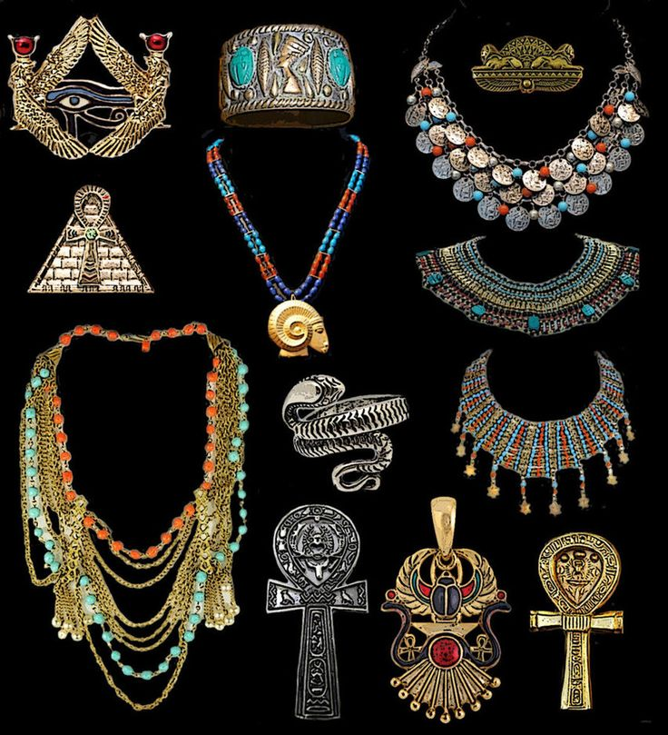

| 讀 | 默想 |
|---|---|
| 出埃及記33:1-11 | |
| 1 耶和華吩咐摩西說：「我曾起誓應許亞伯拉罕、以撒、雅各說：『要將迦南地賜給你的後裔。』現在你和你從埃及地所領出來的百姓，要從這裡往那地去。 2 我要差遣使者在你前面，攆出迦南人、亞摩利人、赫人、比利洗人、希未人、耶布斯人， 3 領你到那流奶與蜜之地。我自己不同你們上去；因為你們是硬著頸項的百姓，恐怕我在路上把你們滅絕。」 | 神還是說「你從埃及地所領出來的百姓 」（1節），表明被金牛犢事件破壞的立約關係還沒有得著恢復。神雖然赦免了背約的百姓，也同意遵守向列祖所立的約，帶領他們進入「那流奶與蜜之地」，百姓雖然有摩西代求而得以存活，但是還沒有經過悔改、贖罪，神還是稱他們為「你從埃及地所領出來的百姓」 神雖守約，差遣使者，攆出敵人，但是百姓尚未潔淨，神不能與罪人同在。 神知道亞當的後裔都是「硬著頸項的百姓」，他們必然會再次犯罪，若公義的神與他們同在，他們「必要滅絕」（二十二20）。 |
| 4 百姓聽見這凶信就悲哀，也沒有人佩戴妝飾。 5 耶和華對摩西說：「你告訴以色列人說：『耶和華說：你們是硬著頸項的百姓，我若一霎時臨到你們中間，必滅絕你們。 現在你們要把身上的妝飾摘下來，使我可以知道怎樣待你們。』」 6 以色列人從住何烈山以後，就把身上的妝飾摘得乾淨。  | 以色列人「身上的妝飾」都是從埃及帶出來的，基本上都與偶像迷信有關 ，神要他們「把身上的妝飾摘下來」（5節），一方面是表明哀傷痛悔的心志，另一方面是徹底去除外邦偶像（創三十五2-4）。 這些「妝飾」後來被百姓甘心樂意地奉獻給神，用於建造會幕（三十五22），用實際行動讓神看到他們悔改的心，「可以知道怎樣待你們」（5節）。 一切都是神所造的，我們所擁有的也都是從神而來的。罪惡世界的物，需要去除偶像罪惡的形象。人也是這樣，需要從心裡分別為聖，歸回給神的計畫使用。 |
| 7 摩西素常將帳棚支搭在營外，離營卻遠，他稱這帳棚為會幕。凡求問耶和華的，就到營外的會幕那裡去。 8 當摩西出營到會幕去的時候，百姓就都起來，各人站在自己帳棚的門口，望著摩西，直等到他進了會幕。 9 摩西進會幕的時候，雲柱降下來，立在會幕的門前，耶和華便與摩西說話。 10 眾百姓看見雲柱立在會幕門前，就都起來，各人在自己帳棚的門口下拜。 | 「會幕」（7節）原文意思是「聚會的帳棚」，是摩西臨時會見神的地方，並非神在山上所啟示的「會幕」（二十七21）。 這會幕「支搭在營外，離營卻遠」，表明「硬著頸項的百姓」（3節）不配有神住在他們中間。然而神卻離百姓不遠，並沒有離棄他們，只是他們需要管教。 「雲柱降下來」（9節），象徵神的同在，意味著神並沒有完全離棄百姓。眾百姓的行為表明，他們非常在意神會不會重新與他們同在，這表明他們的悔改是真心的。 |
| 11 耶和華與摩西面對面說話，好像人與朋友說話一般。摩西轉到營裡去， 惟有他的幫手─一個少年人嫩的兒子約書亞不離開會幕。 | 「面對面說話」、「口對口說話」（民十二8原文）都是希伯來成語，並非指摩西可以用肉眼看見神，而是比喻摩西與神之間的交通親密無間，「好像人與朋友說話一般」。 我們如果在禱告中與主「面對面說話」，也必然能摸著主的心意。因為祂親自應許：「 以後我不再稱你們為僕人，因僕人不知道主人所做的事。我乃稱你們為朋友；因我從我父所聽見的，已經都告訴你們了」（約十五15）。 |
| 親愛的天父上帝，我感謝祢，一切萬物都是祢手所造的，這包含我生命所擁有的一切，也都是從祢而來的。我的生命氣息來自於祢，所以我的工作、我的家庭、我的人際關係、我的健康都在祢的手中。祢叫以色列百姓取下從埃及得來的與偶像有關的金銀首飾，為了要叫他們的身心靈都分別為聖。主耶穌啊，因此我來到祢的面前，真心的悔改，懇求您的寶血潔淨我的心思意念，使我完全歸屬於祢。祢和摩西說話，像人與朋友說話一樣。主耶穌，我感謝祢，祢也稱呼祢的門徒為朋友，懇求祢在我的生活當中也顯明祢從父領受的計劃。祢叫摩西幫助約書亞開始學習親近神，像帶門徒一樣。我懇求祢也幫助我，在小組中和屬靈同伴一起學習親近祢、認識祢，這是我的禱告，奉耶穌基督的名，阿們。 | |
| 讀 | 默想 |
|---|---|
| 出埃及記33:12-23 | |
| 12 摩西對耶和華說：「你吩咐我說：『將這百姓領上去』，卻沒有叫我知道你要打發誰與我同去
，只說：『我按你的名認識你，你在我眼前也蒙了恩。』 13 我如今若在你眼前蒙恩，求你將你的道指示我，使我可以認識你，好在你眼前蒙恩。 求你想到這民是你的民。」 |
摩西說，神還「沒有叫我知道禰要打發誰與我同去」（12節），意思是盼望神自己就是這位「使者」（2節）。這位盡職的中保在尋找一切機會為百姓求情。 在希伯來文化中，「名」代表一個人的本質、特徵和人格。「按你的名認識你」（12節），意思就是「揀選你」，並且有親密的關係。 「你的道」指神的道路、方向、方法、原則。摩西的代禱一方面想更深地認識神的道，以便更好地事奉祂；另一方面也為百姓代求，盼望神重新接納「這民」成為祂的百姓。 「求你想到這民是你的民」，記得在本章第1節，神是稱他們是摩西「你從埃及地所領出來的百姓」。摩西是在求神接納背約的「這民」重新成為祂的立約之民，重新成為神在地上的見證。這實際上正是神的心意 。 |
| 14 耶和華說：「我必親自和你同去，使你得安息。」 15 摩西說：「你若不親自和我同去，就不要把我們從這裡領上去。 16 人在何事上得以知道我和你的百姓在你眼前蒙恩呢？豈不是因你與我們同去、使我和你的百姓與地上的萬民有分別嗎？」 |
摩西體貼了神的心意，神就應許「必親自和你同去，使你得安息」，讓摩西不必掛慮。「得安息」：意思是能夠放心、能夠平安、能夠滿足
。 摩西不但要神「和我同去」（15節），也堅持要求神「與我們同去」，再次強調以色列人是「祢的百姓」。因為他知道神的心意是要得著一個「祭司的國度」（十九6），是要一個團體的見證。若沒有神的同在，寧可不去「流奶與蜜之地」（3節）。信徒不能只顧自己的屬靈追求，卻不肯「彼此勸慰，互相建立」（帖前五11），因為神不是只要得著幾個屬靈的人， 祂賜給我們的一切恩賜，都是為著「建立基督的身體」（弗四12）。 「分別」原文是「被辨別出來」。神百姓最大的特徵，就是有神的同在，能讓人辨認出有神的同在， |
| 17 耶和華對摩西說：「你這所求的我也要行；因為你在我眼前蒙了恩，並且我按你的名認識你。」 | 神再次應允摩西的代禱，同意與那些「硬著頸項的百姓」同在，重新接納他們作為立約的百姓。這不是因為摩西的哀求，而是因為摩西所代禱的正是神的心意。神救贖計畫的終點，就是「神的帳幕在人間。祂要與人同住，他們要作祂的子民。神要親自與他們同在，作他們的神」（啟二十一3）。 |
| 18 摩西說：「求你顯出你的榮耀給我看。」 19 耶和華說：「我要顯我一切的恩慈，在你面前經過，宣告我的名。我要恩待誰就恩待誰；要憐憫誰就憐憫誰」； 20 又說：「你不能看見我的面，因為人見我的面不能存活。」 21 耶和華說：「看哪，在我這裡有地方，你要站在磐石上。 22 我的榮耀經過的時候，我必將你放在磐石穴中，用我的手遮掩你，等我過去， 23 然後我要將我的手收回，你就得見我的背，卻不得見我的面。」 |
摩西繼續要求神顯出自己的「榮耀」（18節），作為祂與百姓同去迦南的證據。這個代禱再次摸著了神的心意，因為神的救贖方法，就是要讓人看到並承認神的兒子基督，「祂是神榮耀所發的光輝，是神本體的真像」（來一3）。摩西所要求的就像以後使徒腓力所要求的：「求主將父顯給我們看，我們就知足了」（約十四8）；雖然現在摩西還不能看見神的面，
但後來主耶穌對腓力說：「人看見了我，就是看見了父」（約十四9）。 神的「手、背」都是擬人的說法。「得見我的背」，比喻摩西當時見到的只是神的榮耀過去之後的影子。意思是，摩西能感受的看不見的神與他同在。 「從來沒有人看見神，只有在父懷裡的獨生子將祂表明出來」 （約一18），將來摩西在變像山上與榮耀的基督面對面說話的時候（路九30），就實現了見神面的盼望。 |
| 禱告：主耶穌啊，我感謝祢，祢呼召我成為祭司，成為代禱者。感謝祢按我的名認識我，求祢使我在祢眼前蒙恩，將祢的道路、方法、策略指示我，使我可以更認識祢。求祢想到OOO、OOO是祢的民，祢差遣我向他們分享祢的話、祢的福音。懇求祢一定要與我同在，親自與我同去，使我在祢的裡面得享滿足與安息，使我在世上的百姓當中有所分別。 主啊，我渴望看見祢的榮耀。摩西不能看到祢的面，只能看到祢的背。主耶穌，我感謝祢，求祢應允我，讓我能夠瞻仰祢的榮美，在今天的生活中，感受到祢的同在。奉耶穌基督的名禱告，阿們。 | |